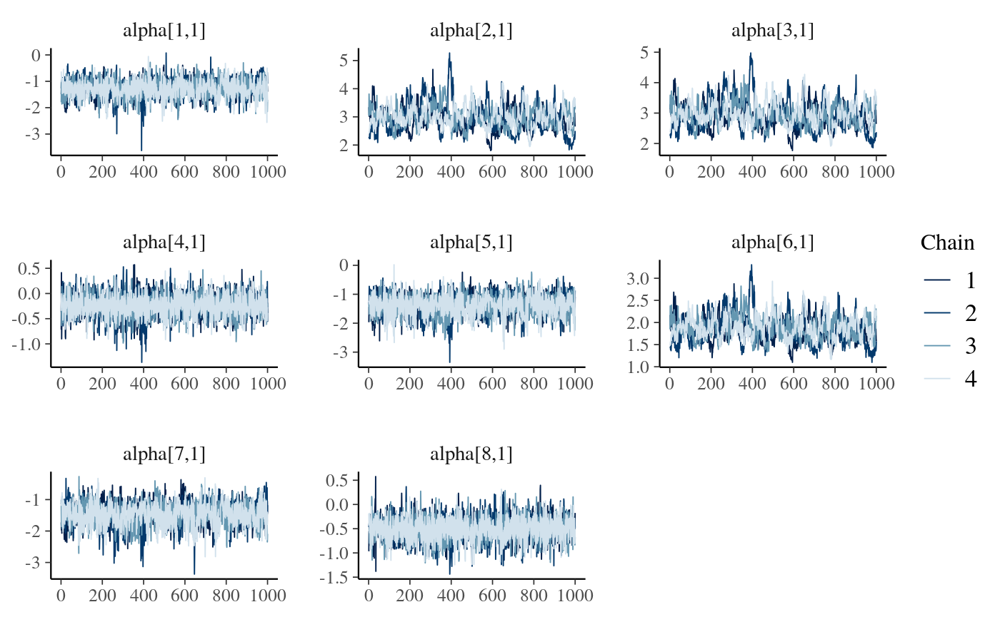
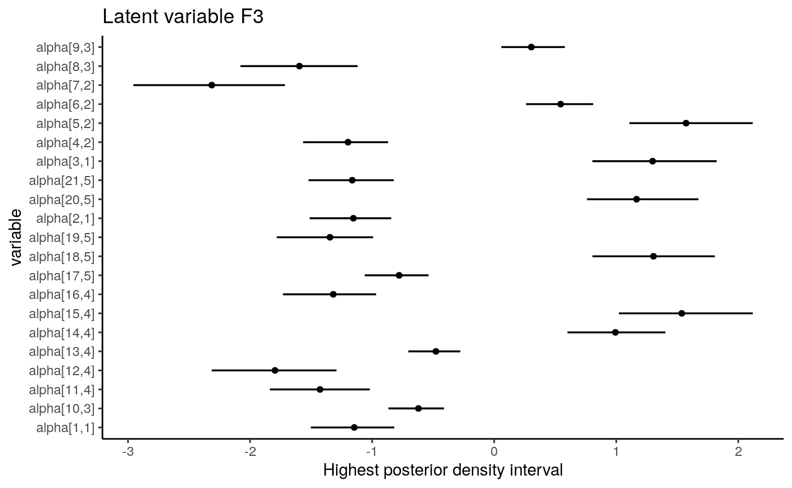
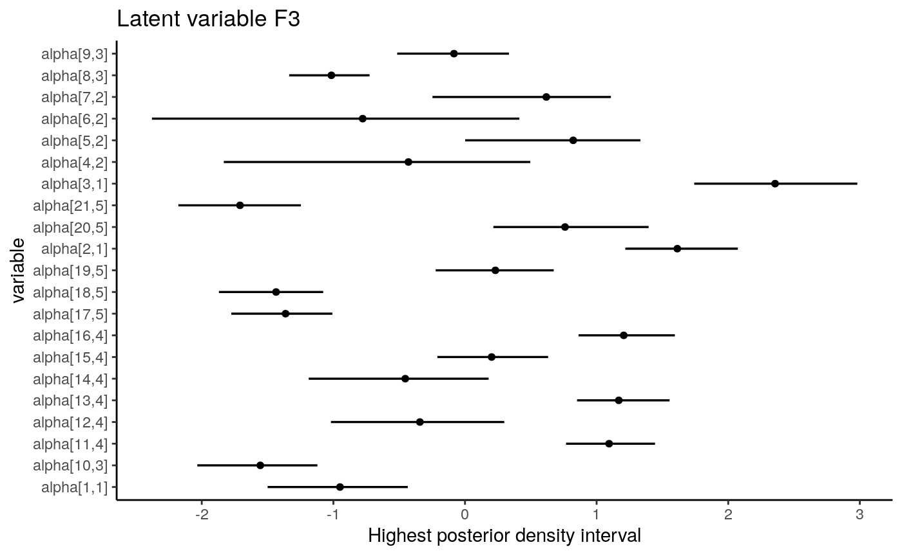
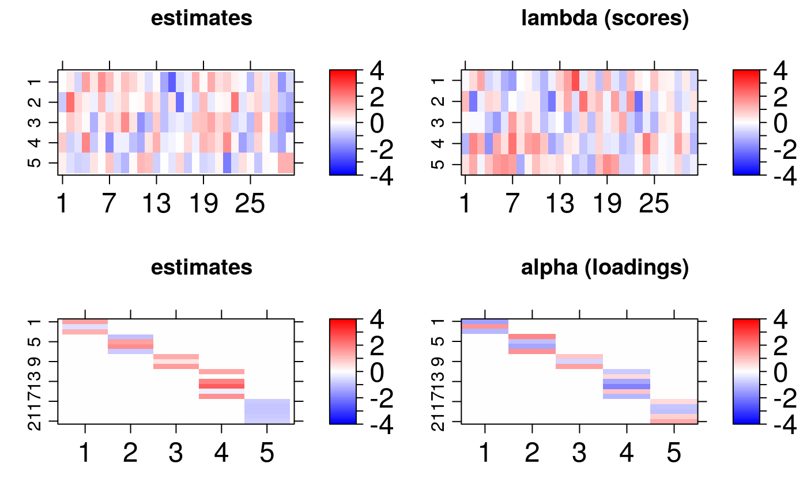
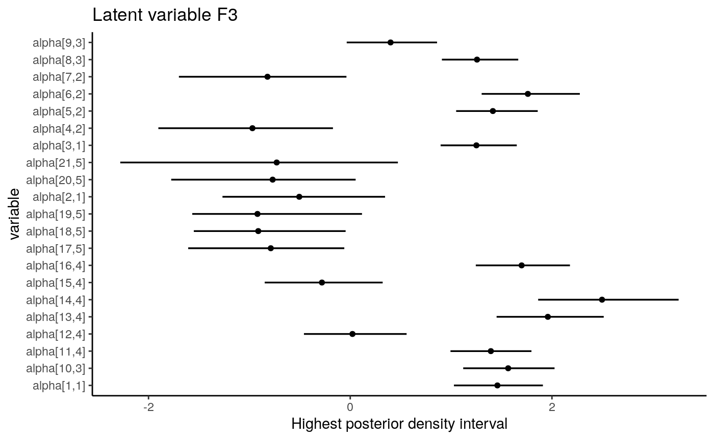
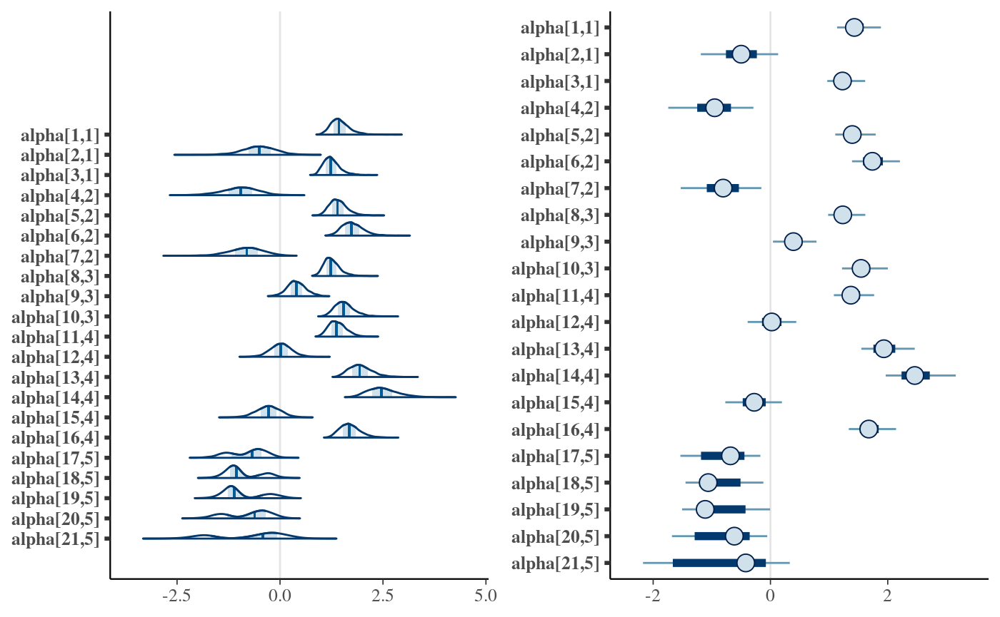

Exploring bsem class
How to get information from the bsem package outcomes
Renato Panaro
2020-06-06
Source:vignettes/exploring-bsem-class.Rmd
exploring-bsem-class.RmdExamples
This vignette describes how the package can be used to estimate artificial parameters. This is a former analysis in light of other studies based on replication such as Monte Carlo simulation study methods. Basically, there are two ways to specify a sem model: 1) the blocks, paths, exogenous and the data set are not named by the user (internally named); 2) named list are passed to their respective arguments and consequently to the automated plot function.
Uni-factor CFA
The first example is based on the uni-factor model ( Reckase, 1979).
- The number of variables (columns), observations (rows) and latent variables to be simulated are defined:
Nv <- 8 Ne <- 30 K <- 1
- A list of blocks is always necessary to represent the manifest variables related to each construct of the outer model:
B <- list(F1 = 1:Nv) B
## $F1
## [1] 1 2 3 4 5 6 7 8The function bsem::simdata is used to generate simulated data. This routine internally produces artificial variances that are used to generate the normal distributed errors. Factor scores (lambda) are generated from a standard normal distribution and the factor loadings (alpha) from a uniform distribution with support ranging from 0.5 to 2. The factor loading direction is generated using signals simulated from the sample function. A new artificial data set is produced with the command below:
dt1 <- bsem::simdata( blocks = B, paths = NULL, exogenous = NULL )
The paths andexogenous arguments must be defined as NULL to obtain a data set suitable for factor analysis. Now we can run bsem::sem to check whether the bsem::sem retrieve estimates close to the real values of the parameters. We simply use the data argument and the blocks argument to specify the one-factor model:
unifact <- bsem::sem( data = dt1$data, blocks = dt1$blocks, chains = 4, cores = 4 )
## Warning in bsem::sem(data = dt1$data, blocks = dt1$blocks, chains = 4, cores =
## 1): underspecification; signals not specified: random initial values assigned
## for alphaA warning is displayed if the direction of the outer model loadings is not specified. In this case, random values are assigned. Descriptive statistics for the posterior factor loadings are showed in the R console inspired on the rstan fashion (based on rstan::monitor). In general, the posterior mean is the Bayesian estimator first choice:
unifact##
##
## ---
## bsem model: factorial
## latent variables (outter model): 1
##
##
## outter model loadings (alpha):
##
## F1
## mean 50% sd HPD.l HPD.u n_eff Rhat
## X1 -1.2716 -1.2587 0.3394 -1.9379 -0.6287 634 1.005
## X2 2.9625 2.9294 0.4237 2.1918 3.8310 177 1.023
## X3 2.9314 2.9012 0.4174 2.1498 3.7845 178 1.024
## X4 -0.2353 -0.2300 0.2173 -0.6801 0.1686 3505 1.001
## X5 -1.3580 -1.3312 0.3564 -2.0849 -0.7192 615 1.005
## X6 1.8537 1.8316 0.2780 1.3369 2.4273 187 1.020
## X7 -1.4574 -1.4351 0.3631 -2.2491 -0.8198 523 1.006
## X8 -0.5019 -0.4943 0.2435 -1.0050 -0.0559 1520 1.003The structural model can be easily viewed with the plotting routine bsem::plot:
plot(unifact)
Moreover, we can compare the posterior factor loadings and the scores with the true values using the bsem::arrayplot function. For example:
gridExtra::grid.arrange(bsem::arrayplot(dt1$real$lambda, main = "scores (lambda)", -4, 4), bsem::arrayplot(unifact$mean_lambda, main = "scores estimate", -4, 4), bsem::arrayplot(dt1$real$alpha, main = "loadings (alpha)", -4, 4), bsem::arrayplot(unifact$mean_alpha, main = "loadings estimate", -4, 4), layout_matrix = matrix(c(1, 1, 3, 3, 2, 2, 4, 4), ncol = 2) )

The bsem::arrayplot graphs show that the loadings and scores pattern were captured by the model. In order to get closer estimates it may be necessary to increase the number of iterations or the warmup period since this is a model with many parameters.
loadings_names <- rownames(unifact$mean_alpha) find <- paste0("alpha[", which(loadings_names %in% unlist(unifact$blocks)), ",", rep(1:length(unifact$blocks), lengths(unifact$blocks)), "]") bayesplot::mcmc_trace(unifact$posterior$alpha[, , find])

Remember each chains runs in a separate thread, thus, it is recommended specifying a number of cores at least equal to the number of chains. Indeed, from our experience, an increase in the number of iterations raises the runtime but considerably improves the interval and point estimates.
Bi-factor CFA
The data generated for the uni-factor example, is also used here. This example refers to an application of the bi-factor model ( Jennrich and Bentler, 2011; Gibbons and Hedeker, 1992). The ideia behind this application is to show how flexible is SEM. From our generated data we have that variables should manifest only the latent variable F1.
- The list object
Brepresents each block, indicating which manifest variables are related to each construct.Band, consequently,signalsare modified for a bi-factor analysis.
B$G1 <- 1:3 B$G2 <- 4:6 B$G3 <- 7:8 B
## $F1
## [1] 1 2 3 4 5 6 7 8
##
## $G1
## [1] 1 2 3
##
## $G2
## [1] 4 5 6
##
## $G3
## [1] 7 8dt2 <- bsem::simdata( blocks = B, paths = NULL, exogenous = NULL )
Simply use the data argument and the blocks argument to specify the bi-factor model above:
bifact <- bsem::sem( data = dt2$data, blocks = dt2$blocks, chains = 4 )
## Warning in bsem::sem(data = dt2$data, blocks = dt2$blocks, chains = 4):
## underspecification; signals not specified: random initial values assigned for
## alphaThe structural model is displayed using bsem::plot:
Compare the posterior factor loadings and the scores with the true values using the bsem::arrayplot function:

The traceplot using bayesplot::mcmc_trace:

The bsem::arrayplot graphs show that the loadings and scores pattern were captured by the model. An increase in the number of iterations or the warmup period may improve the point estimates.
Multi-factor CFA
The implemented routines allow partial and full confirmatory factor analysis (CFA). So, at least one variable must be chosen to express each construct before running into the analysis. In other words, the user needs to specify at least one manifest variable that lead each block. In this way, semi-confirmatory FA assists the researcher in evidencing the possible structures to be tested in a conceptual (full) CFA later on.
dt3 <- bsem::simdata(paths = NULL, exogenous = NULL)
- The list of blocks represent that indicates only the manifest variables related to each construct:
dt3$blocks
## $F1
## [1] 1 2 3
##
## $F2
## [1] 4 5 6 7
##
## $F3
## [1] 8 9 10
##
## $F4
## [1] 11 12 13 14 15 16
##
## $F5
## [1] 17 18 19 20 21- Descriptive statistics for the posterior factor loadings are showed in the result in
rstanfashion (based onrstan::monitor):
multifact <- bsem::sem(data = dt3$data, blocks = dt3$blocks, chains = 4 )
## Warning in bsem::sem(data = dt3$data, blocks = dt3$blocks, chains = 4):
## underspecification; signals not specified: random initial values assigned for
## alpha- The structural model can be easily viewed with the plotting routine
bsem::plot:


The recursive arrows indicate the estimate for each error variance. From this example, we found that the estimates pattern are tighly close to the true values of the parameters even when the signals are not passed. Also, we have observed that the part of the analysis is intended to confirm the predefined constructs CFA (first loadings matrix lines) and the other is intended to express which variable can compose a later full CFA.
Graphical posterior analysis
The first thing to do is to check posterior statistics in order to assess whether the estimates are good to describe the proposed CFA or SEM model.
Interval estimate
Two types of intervals can be obtained:
HPD interval
- The narrowest (highest posterior density - HPD) credibility interval can be retrieved using
.$credint. We have computed HPD intervals fo the factor loadings (alpha), scores (lambda), and regression coefficients (beta).
names(multifact$credint)
## [1] "alpha" "lambda" "sigma2"- This data can be used to plot interval estimates using two packages,
ggplot2andtidybayes:
-
dtdata.frame object has the mean loadings and the HPD interval lower and upper limits (llandlu):
dt <- data.frame( li = multifact$credint$alpha[, 1], lu = multifact$credint$alpha[, 2], m = c(multifact$mean_alpha) )
-
lnamesandsnamesare used to find the loadings of the conceptual model (those that might not equal zero).
-
findhelp us finding these values:
find <- paste0("alpha[", which(lnames %in% unlist(multifact$blocks)), ",", rep(1:length(multifact$blocks), lengths(multifact$blocks)), "]") dt <- dt[find, ]
- One of the options to plot the loadings HPD intervals chart is:
ggplot(aes(y = find, x = m, xmin = li, xmax = lu), data = dt) + geom_pointintervalh() + theme_classic() + labs( title = paste("Latent variable", colnames(multifact$mean_alpha)[3]), x = "Highest posterior density interval", y = "variable" )

In the SEM example above, all intervals regarding the loading estimates from the conceptual relationships do not include zero.
Equal tails interval
Alternatively, it is possible to access equal tails credibility intevals using the bayesplot package:
library("bayesplot")
-
findhelp us finding the loading values that have been previously determined to estimate the latent scores:
find <- paste0("alpha[", which(lnames %in% unlist(multifact$blocks)), ",", rep(1:length(multifact$blocks), lengths(multifact$blocks)), "]") dt <- dt[find, ]
- The equal tails intervals are:
gridExtra::grid.arrange(mcmc_areas(multifact$posterior$alpha[, , find]), mcmc_intervals(multifact$posterior$alpha[, , find]), layout_matrix = matrix(c(1, 1, 2, 2), ncol = 2) )

In addition to the possibilities for intervals, other mcmc_. type graphs are highly recommended, several options include histograms, violin plots, pair plots and others.